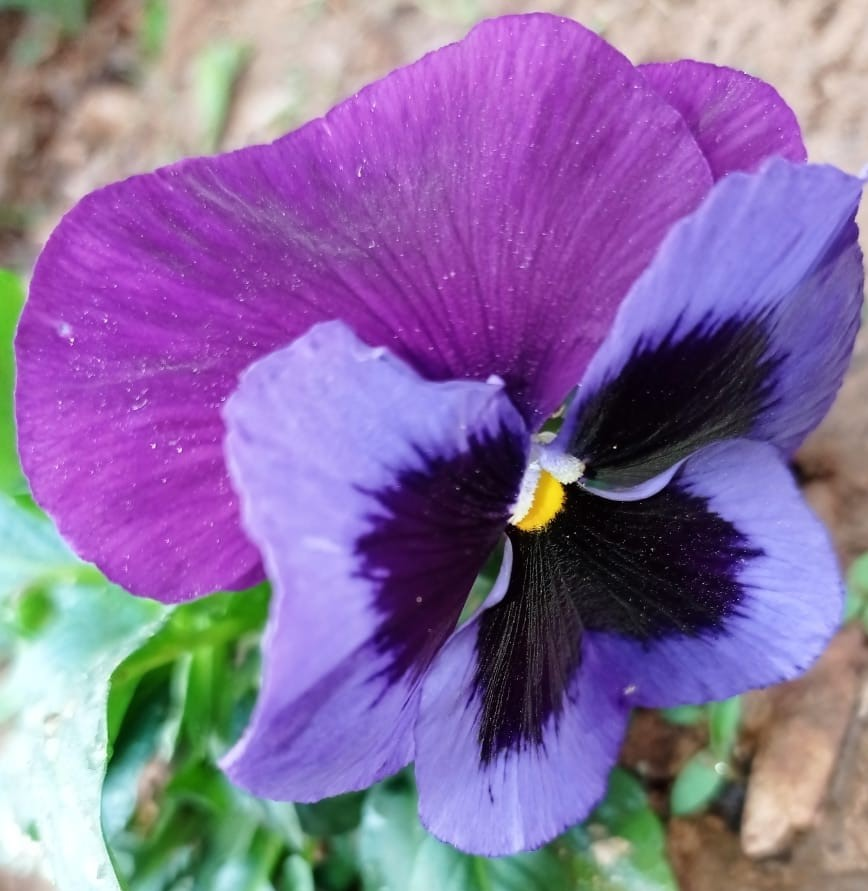

Pansy
The garden pansy is a type of large-flowered hybrid plant cultivated as a garden flower.It is derived by hybridization from several species in the section Melanium ("the pansies") of the genus Viola, particularly Viola tricolor, a wildflower of Europe and western Asia known as heartsease. It is sometimes known as Viola tricolor var. hortensis, but this scientific name is ambiguous. While Viola tricolor var.Hortensis DC (Viola tricolor without interspecific hybridization) that had been illustrated in Flora Danica in 1777 before the existence of Viola × wittrockiana.
Pansy
Why FlowerInfo ?
Why we're different?
- Believe in doing our work with honesty.
- Make sure optimized information should reach to you all.
- Serve for the betterment of customers.
- Focus on enhancing knowledge.
- Our website is an encyclopedia.

What Clients Say
FlowerInfo is really an amazing website it contains various facts and figures which can help you to enlighten you half knowledge.

Sheissuru
Co-founder at FlowerCare
FlowerInfo is awesome,i've been using this site for so long while gathering informtion to make new projects.

Ericson
Director at writometer

Follow Flowerinfo on our social media to stay tuned with us.Thank you!
CONTACT US
 Near Nakshatravan,Ranchi
Near Nakshatravan,Ranchi
 +0651 2460366
+0651 2460366
 flowerinfo@gmail.com
flowerinfo@gmail.com
Website Created by Sheissuru